Chapter 6. Mixture Models#
import os
import warnings
import arviz as az
import matplotlib.pyplot as plt
import pandas as pd
import jax.numpy as jnp
from jax import random, local_device_count
import numpyro
import numpyro.distributions as dist
from numpyro.infer import MCMC, NUTS, Predictive
from numpyro.distributions.transforms import OrderedTransform
seed=1234
if "SVG" in os.environ:
%config InlineBackend.figure_formats = ["svg"]
warnings.formatwarning = lambda message, category, *args, **kwargs: "{}: {}\n".format(
category.__name__, message
)
az.style.use("arviz-darkgrid")
numpyro.set_platform("cpu") # or "gpu", "tpu" depending on system
numpyro.set_host_device_count(local_device_count())
/home/runner/work/bap-numpyro/bap-numpyro/.venv/lib/python3.13/site-packages/tqdm/auto.py:21: TqdmWarning: IProgress not found. Please update jupyter and ipywidgets. See https://ipywidgets.readthedocs.io/en/stable/user_install.html
from .autonotebook import tqdm as notebook_tqdm
# import pymc3 as pm
# import numpy as np
# import scipy.stats as stats
# import pandas as pd
# import theano.tensor as tt
# import matplotlib.pyplot as plt
# import arviz as az
# az.style.use('arviz-darkgrid')
# np.random.seed(42)
cs = pd.read_csv('../data/chemical_shifts_theo_exp.csv')
cs_exp = cs['exp']
az.plot_kde(cs_exp)
plt.hist(cs_exp, density=True, bins=30, alpha=0.3)
plt.yticks([])
([], [])
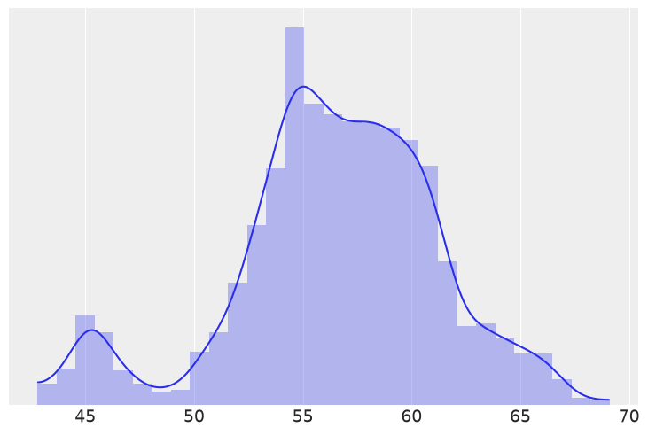
#with pm.Model() as model_kg:
# p = pm.Dirichlet('p', a=np.ones(clusters))
# z = pm.Categorical('z', p=p, shape=len(cs_exp))
# means = pm.Normal('means', mu=cs_exp.mean(), sd=10, shape=clusters)
# sd = pm.HalfNormal('sd', sd=10)
#
# y = pm.Normal('y', mu=means[z], sd=sd, observed=cs_exp)
# trace_kg = pm.sample()
# with numpyro.handlers.seed(rng_seed=seed):
# N = 1 # Samples
# b = numpyro.sample("p", dist.Dirichlet(concentration=jnp.ones(clusters)).expand([N]))
# # dist.Dirichlet(concentration=jnp.ones(clusters)).sample(random.PRNGKey(0), (1,))
# b.squeeze()
clusters = 2
def model(obs=None):
p = numpyro.sample("p", dist.Dirichlet(concentration=jnp.ones(clusters)))
c = dist.Categorical(probs=p.squeeze())
means = numpyro.sample('means', dist.Normal(loc=cs_exp.mean(), scale=10), sample_shape=(clusters,))
sd = numpyro.sample('sd', dist.HalfNormal(scale=10))
component_dist = dist.Normal(loc=means, scale=sd)
y = numpyro.sample('y', dist.MixtureSameFamily(mixing_distribution=c, component_distribution=component_dist), obs=obs)
kernel = NUTS(model)
mcmc = MCMC(kernel, num_warmup=500, num_samples=2000, num_chains=2, chain_method='sequential')
mcmc.run(random.PRNGKey(seed), obs=jnp.asarray(cs_exp))
mcmc.get_samples()
{'means': Array([[47.580914, 57.511353],
[46.31163 , 57.463352],
[46.945286, 57.36471 ],
...,
[57.31111 , 46.130222],
[57.549923, 46.910404],
[57.402885, 47.477074]], dtype=float32),
'p': Array([[0.10050424, 0.8994958 ],
[0.08773348, 0.9122665 ],
[0.0858224 , 0.9141776 ],
...,
[0.9215747 , 0.07842529],
[0.9024806 , 0.0975194 ],
[0.9084545 , 0.09154552]], dtype=float32),
'sd': Array([3.6588502, 3.6098988, 3.7137556, ..., 3.6483197, 3.713011 ,
3.641915 ], dtype=float32)}
varnames = ['means', 'p']
az.plot_trace(mcmc, varnames, compact=False)
array([[<Axes: title={'center': 'means\n0'}>,
<Axes: title={'center': 'means\n0'}>],
[<Axes: title={'center': 'means\n1'}>,
<Axes: title={'center': 'means\n1'}>],
[<Axes: title={'center': 'p\n0'}>,
<Axes: title={'center': 'p\n0'}>],
[<Axes: title={'center': 'p\n1'}>,
<Axes: title={'center': 'p\n1'}>]], dtype=object)
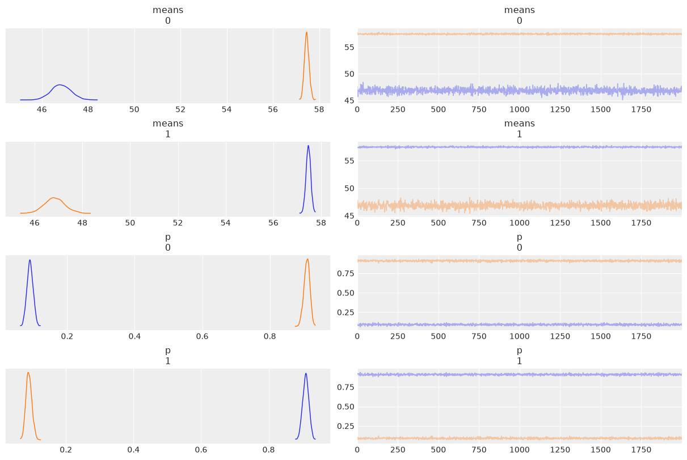
# clusters = 2
# with pm.Model() as model_mg:
# p = pm.Dirichlet('p', a=np.ones(clusters))
# means = pm.Normal('means', mu=cs_exp.mean(), sd=10, shape=clusters)
# sd = pm.HalfNormal('sd', sd=10)
# y = pm.NormalMixture('y', w=p, mu=means, sd=sd, observed=cs_exp)
# trace_mg = pm.sample(random_seed=123)
# varnames = ['means', 'p']
# az.plot_trace(trace_mg, varnames)
# plt.savefig('B11197_06_06.png')
az.summary(mcmc, var_names=varnames)
| mean | sd | hdi_3% | hdi_97% | mcse_mean | mcse_sd | ess_bulk | ess_tail | r_hat | |
|---|---|---|---|---|---|---|---|---|---|
| means[0] | 52.147 | 5.328 | 46.306 | 57.685 | 3.755 | 0.005 | 3.0 | 59.0 | 1.83 |
| means[1] | 52.152 | 5.324 | 46.301 | 57.663 | 3.752 | 0.006 | 3.0 | 66.0 | 1.83 |
| p[0] | 0.500 | 0.410 | 0.076 | 0.923 | 0.289 | 0.000 | 3.0 | 51.0 | 1.83 |
| p[1] | 0.500 | 0.410 | 0.077 | 0.924 | 0.289 | 0.000 | 3.0 | 51.0 | 1.83 |
# az.summary(trace_mg, varnames)
Non-identifiability of mixture models#
jnp.array([.9, 1]) * cs_exp.mean()
Array([50.859257, 56.51029 ], dtype=float32)
jnp.expand_dims(jnp.asarray(cs_exp), axis=1).shape
(1776, 1)
clusters = 2
def model(obs=None):
p = numpyro.sample("p", dist.Dirichlet(concentration=jnp.ones(clusters)))
c = dist.Categorical(probs=p.squeeze())
mu = jnp.array([.9, 1]) * cs_exp.mean()
means = numpyro.sample('means', dist.Normal(loc=mu, scale=10), sample_shape=(2,))
sd = numpyro.sample('sd', dist.HalfNormal(scale=10))
component_dist = dist.Normal(loc=means, scale=sd)
y = numpyro.sample('y', dist.MixtureSameFamily(mixing_distribution=c, component_distribution=component_dist), obs=obs)
kernel = NUTS(model)
mcmc2 = MCMC(kernel, num_warmup=500, num_samples=2000, num_chains=2, chain_method='sequential')
mcmc2.run(random.PRNGKey(seed), obs=jnp.expand_dims(jnp.asarray(cs_exp), axis=1))
varnames = ['means', 'p']
az.plot_trace(mcmc2, varnames, compact=False)
array([[<Axes: title={'center': 'means\n0, 0'}>,
<Axes: title={'center': 'means\n0, 0'}>],
[<Axes: title={'center': 'means\n0, 1'}>,
<Axes: title={'center': 'means\n0, 1'}>],
[<Axes: title={'center': 'means\n1, 0'}>,
<Axes: title={'center': 'means\n1, 0'}>],
[<Axes: title={'center': 'means\n1, 1'}>,
<Axes: title={'center': 'means\n1, 1'}>],
[<Axes: title={'center': 'p\n0'}>,
<Axes: title={'center': 'p\n0'}>],
[<Axes: title={'center': 'p\n1'}>,
<Axes: title={'center': 'p\n1'}>]], dtype=object)
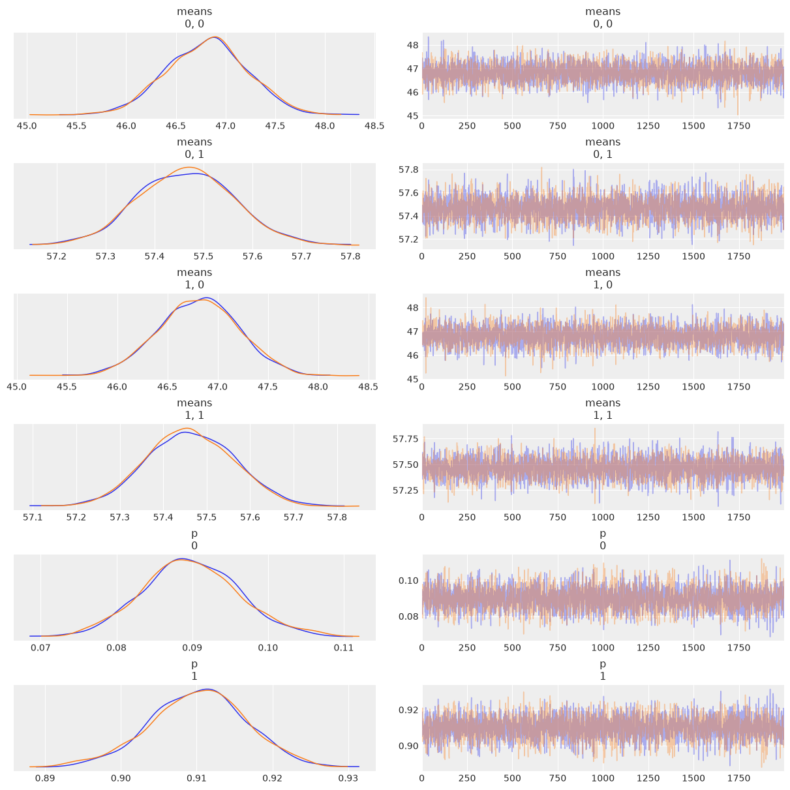
# instead of a potential we can use an ordered transformation
# transform=pm.distributions.transforms.ordered
az.summary(mcmc2)
| mean | sd | hdi_3% | hdi_97% | mcse_mean | mcse_sd | ess_bulk | ess_tail | r_hat | |
|---|---|---|---|---|---|---|---|---|---|
| means[0, 0] | 46.813 | 0.408 | 46.056 | 47.561 | 0.006 | 0.007 | 5376.0 | 2848.0 | 1.0 |
| means[0, 1] | 57.464 | 0.099 | 57.276 | 57.652 | 0.001 | 0.002 | 4467.0 | 2762.0 | 1.0 |
| means[1, 0] | 46.809 | 0.402 | 46.091 | 47.597 | 0.006 | 0.006 | 4991.0 | 3236.0 | 1.0 |
| means[1, 1] | 57.462 | 0.100 | 57.293 | 57.663 | 0.001 | 0.002 | 5176.0 | 3101.0 | 1.0 |
| p[0] | 0.090 | 0.006 | 0.078 | 0.102 | 0.000 | 0.000 | 4440.0 | 3139.0 | 1.0 |
| p[1] | 0.910 | 0.006 | 0.898 | 0.922 | 0.000 | 0.000 | 4440.0 | 3139.0 | 1.0 |
| sd | 3.649 | 0.052 | 3.555 | 3.748 | 0.001 | 0.001 | 6559.0 | 3142.0 | 1.0 |
How to choose K#
def model(obs=None):
p = numpyro.sample("p", dist.Dirichlet(concentration=jnp.ones(clusters)))
c = dist.Categorical(probs=p.squeeze())
mu = jnp.array([.9, 1]) * cs_exp.mean()
means = numpyro.sample('means', dist.Normal(loc=mu, scale=10), sample_shape=(2,))
sd = numpyro.sample('sd', dist.HalfNormal(scale=10))
component_dist = dist.Normal(loc=means, scale=sd)
y = numpyro.sample('y', dist.MixtureSameFamily(mixing_distribution=c, component_distribution=component_dist), obs=obs)
kernel = NUTS(model)
mcmc2 = MCMC(kernel, num_warmup=500, num_samples=2000, num_chains=2, chain_method='sequential')
mcmc2.run(random.PRNGKey(seed), obs=jnp.expand_dims(jnp.asarray(cs_exp), axis=1))
clusters = [3, 4, 5, 6]
models = []
traces = []
for cluster in clusters:
def model(obs=None):
p = numpyro.sample("p", dist.Dirichlet(concentration=jnp.ones(cluster)))
c = dist.Categorical(probs=p.squeeze())
mu = jnp.linspace(cs_exp.min(), cs_exp.max(), cluster)
means = numpyro.sample('means',
dist.TransformedDistribution(
base_distribution=dist.Normal(loc=mu, scale=10).expand([cluster]),
transforms=OrderedTransform()
))
print(means)
sd = numpyro.sample('sd', dist.HalfNormal(scale=10))
component_dist = dist.Normal(loc=means, scale=sd)
print(c.probs.shape)
y = numpyro.sample('y', dist.MixtureSameFamily(mixing_distribution=c, component_distribution=component_dist), obs=obs)
kernel = NUTS(model)
trace = MCMC(kernel, num_warmup=500, num_samples=2000, num_chains=2, chain_method='sequential')
trace.run(random.PRNGKey(seed), obs=jnp.expand_dims(jnp.asarray(cs_exp), axis=1))
traces.append(trace)
models.append(model)
[1.1757951 4.914957 9.147978 ]
(3,)
GradTracer(primal=[1.1757951 4.914957 9.147978 ], typeof(tangent)=f32[3])
(3,)
GradTracer(primal=JitTracer(float32[3]), typeof(tangent)=f32[3])
(3,)
[1.4278064 4.8978853 6.2823005]
(3,)
GradTracer(primal=[1.4278064 4.8978853 6.2823005], typeof(tangent)=f32[3])
(3,)
[ 1.1757951 4.914957 9.147978 10.336727 ]
(4,)
GradTracer(primal=[ 1.1757951 4.914957 9.147978 10.336727 ], typeof(tangent)=f32[4])
(4,)
GradTracer(primal=JitTracer(float32[4]), typeof(tangent)=f32[4])
(4,)
[1.4278064 4.8978853 6.2823005 9.461412 ]
(4,)
GradTracer(primal=[1.4278064 4.8978853 6.2823005 9.461412 ], typeof(tangent)=f32[4])
(4,)
[ 1.1757951 4.914957 9.147978 10.336727 10.56475 ]
(5,)
GradTracer(primal=[ 1.1757951 4.914957 9.147978 10.336727 10.56475 ], typeof(tangent)=f32[5])
(5,)
GradTracer(primal=JitTracer(float32[5]), typeof(tangent)=f32[5])
(5,)
[ 1.4278064 4.8978853 6.2823005 9.461412 12.84012 ]
(5,)
GradTracer(primal=[ 1.4278064 4.8978853 6.2823005 9.461412 12.84012 ], typeof(tangent)=f32[5])
(5,)
[ 1.1757951 4.914957 9.147978 10.336727 10.56475 12.195241 ]
(6,)
GradTracer(primal=[ 1.1757951 4.914957 9.147978 10.336727 10.56475 12.195241 ], typeof(tangent)=f32[6])
(6,)
GradTracer(primal=JitTracer(float32[6]), typeof(tangent)=f32[6])
(6,)
[ 1.4278064 4.8978853 6.2823005 9.461412 12.840121 14.035982 ]
(6,)
GradTracer(primal=[ 1.4278064 4.8978853 6.2823005 9.461412 12.840121 14.035982 ], typeof(tangent)=f32[6])
(6,)
_, ax = plt.subplots(2, 2, figsize=(11, 8), constrained_layout=True)
ax = list(ax.flat)
x = jnp.linspace(cs_exp.min(), cs_exp.max(), 200)
for idx, trace_x in enumerate(traces):
x_ = jnp.array([x] * clusters[idx]).T
for i in range(50):
i_ = int(dist.Uniform(low=0, high=len(trace_x.get_samples()['means'])).sample(key=random.PRNGKey(i)))
means_y = trace_x.get_samples()['means'][i_]
p_y = trace_x.get_samples()['p'][i_]
sd = trace_x.get_samples()['sd'][i_]
distri = dist.Normal(loc=means_y, scale=sd)
ax[idx].plot(x, jnp.sum(jnp.exp(distri.log_prob(x_)) * p_y, 1), 'C0', alpha=0.1)
means_y = trace_x.get_samples()['means'].mean(0)
p_y = trace_x.get_samples()['p'].mean(0)
sd = trace_x.get_samples()['sd'].mean()
distri = dist.Normal(loc=means_y, scale=sd)
#stats.norm(means_y, sd)
ax[idx].plot(x, jnp.sum(jnp.exp(distri.log_prob(x_)) * p_y, 1), 'C0', lw=2)
ax[idx].plot(x, jnp.exp(distri.log_prob(x_)) * p_y, 'k--', alpha=0.7)
az.plot_kde(cs_exp, plot_kwargs={'linewidth':2, 'color':'k'}, ax=ax[idx])
ax[idx].set_title('K = {}'.format(clusters[idx]))
ax[idx].set_yticks([])
ax[idx].set_xlabel('x')
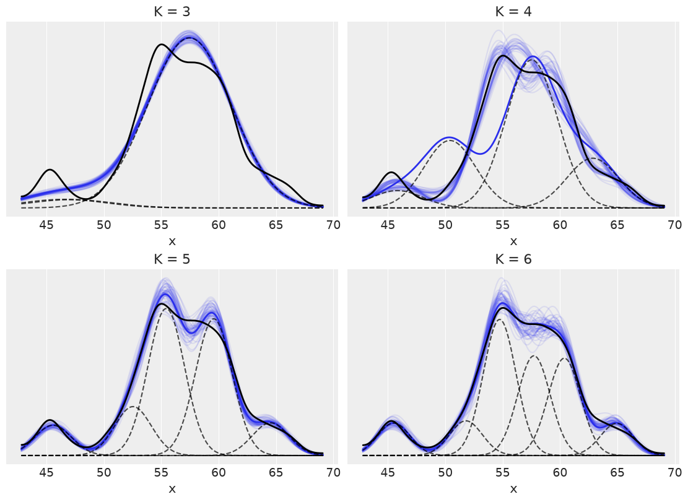
# prior = Predictive(mcmc_l.sampler.model, num_samples=10)
# prior_p = prior(random.PRNGKey(seed), obs=y_1s)
Predictive(model=traces[0].sampler.model,
posterior_samples=traces[0].get_samples(),
return_sites=['y'])(random.PRNGKey(seed)).values()
JitTracer(float32[3])
(3,)
dict_values([Array([53.187992, 57.290894, 57.881 , ..., 57.647396, 54.501644,
57.747177], dtype=float32)])
ppc_mm = [
Predictive(model=traces[i].sampler.model,
posterior_samples=traces[i].get_samples(),
return_sites=['y'])(random.PRNGKey(seed))
for i in range(4)]
JitTracer(float32[3])
(3,)
JitTracer(float32[4])
(4,)
JitTracer(float32[5])
(5,)
JitTracer(float32[6])
(6,)
type(ppc_mm)
list
for idx, d_sim in enumerate(list(ppc_mm)):
print(idx, d_sim['y'])
0 [53.187992 57.290894 57.881 ... 57.647396 54.501644 57.747177]
1 [50.54214 55.621502 56.16703 ... 59.404232 66.83684 59.205715]
2 [46.420326 54.95187 54.4958 ... 58.22527 67.149445 57.838387]
3 [54.43933 59.751354 53.548313 ... 59.559574 64.58404 57.118355]
jnp.expand_dims(d_sim['y'][:100].T, axis=1).shape
(100, 1)
# iqr(d_sim['y'][:100].T, 0)
# ppc_mm = [pm.sample_posterior_predictive(traces[i], 1000, models[i])
# for i in range(4)]
fig, ax = plt.subplots(2, 2, figsize=(10, 6), sharex=True, constrained_layout=True)
ax = list(ax.flat)
def iqr(x, a=0):
return jnp.subtract(*jnp.percentile(jnp.asarray(x), jnp.array([75, 25]), axis=a))
T_obs = iqr(cs_exp)
for idx, d_sim in enumerate(ppc_mm):
ds = jnp.expand_dims(d_sim['y'][:100], axis=1)
T_sim = iqr(ds.T, 0)
print(T_sim)
p_value = jnp.mean(T_sim >= T_obs)
az.plot_kde(T_sim, ax=ax[idx])
ax[idx].axvline(T_obs, 0, 1, color='k', ls='--')
ax[idx].set_title(f'K = {clusters[idx]} \n p-value {p_value:.2f}')
ax[idx].set_yticks([])
[0. 0. 0. 0. 0. 0. 0. 0. 0. 0. 0. 0. 0. 0. 0. 0. 0. 0. 0. 0. 0. 0. 0. 0.
0. 0. 0. 0. 0. 0. 0. 0. 0. 0. 0. 0. 0. 0. 0. 0. 0. 0. 0. 0. 0. 0. 0. 0.
0. 0. 0. 0. 0. 0. 0. 0. 0. 0. 0. 0. 0. 0. 0. 0. 0. 0. 0. 0. 0. 0. 0. 0.
0. 0. 0. 0. 0. 0. 0. 0. 0. 0. 0. 0. 0. 0. 0. 0. 0. 0. 0. 0. 0. 0. 0. 0.
0. 0. 0. 0.]
UserWarning: Your data appears to have a single value or no finite values
[0. 0. 0. 0. 0. 0. 0. 0. 0. 0. 0. 0. 0. 0. 0. 0. 0. 0. 0. 0. 0. 0. 0. 0.
0. 0. 0. 0. 0. 0. 0. 0. 0. 0. 0. 0. 0. 0. 0. 0. 0. 0. 0. 0. 0. 0. 0. 0.
0. 0. 0. 0. 0. 0. 0. 0. 0. 0. 0. 0. 0. 0. 0. 0. 0. 0. 0. 0. 0. 0. 0. 0.
0. 0. 0. 0. 0. 0. 0. 0. 0. 0. 0. 0. 0. 0. 0. 0. 0. 0. 0. 0. 0. 0. 0. 0.
0. 0. 0. 0.]
[0. 0. 0. 0. 0. 0. 0. 0. 0. 0. 0. 0. 0. 0. 0. 0. 0. 0. 0. 0. 0. 0. 0. 0.
0. 0. 0. 0. 0. 0. 0. 0. 0. 0. 0. 0. 0. 0. 0. 0. 0. 0. 0. 0. 0. 0. 0. 0.
0. 0. 0. 0. 0. 0. 0. 0. 0. 0. 0. 0. 0. 0. 0. 0. 0. 0. 0. 0. 0. 0. 0. 0.
0. 0. 0. 0. 0. 0. 0. 0. 0. 0. 0. 0. 0. 0. 0. 0. 0. 0. 0. 0. 0. 0. 0. 0.
0. 0. 0. 0.]
[0. 0. 0. 0. 0. 0. 0. 0. 0. 0. 0. 0. 0. 0. 0. 0. 0. 0. 0. 0. 0. 0. 0. 0.
0. 0. 0. 0. 0. 0. 0. 0. 0. 0. 0. 0. 0. 0. 0. 0. 0. 0. 0. 0. 0. 0. 0. 0.
0. 0. 0. 0. 0. 0. 0. 0. 0. 0. 0. 0. 0. 0. 0. 0. 0. 0. 0. 0. 0. 0. 0. 0.
0. 0. 0. 0. 0. 0. 0. 0. 0. 0. 0. 0. 0. 0. 0. 0. 0. 0. 0. 0. 0. 0. 0. 0.
0. 0. 0. 0.]
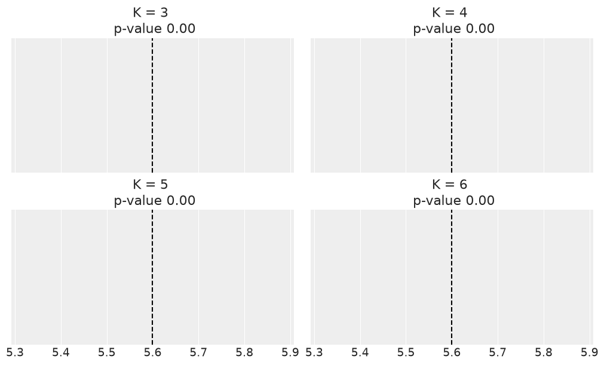
idata_list = [az.from_numpyro(t) for t in traces]
comp = az.compare(dict(zip(clusters, idata_list)), ic="waic", method='BB-pseudo-BMA')
comp
JitTracer(float32[6])
(6,)
[3.0225224e+01 1.3429115e+19 1.5363652e+19 1.8018420e+29 1.8018516e+29
3.2886866e+31]
(6,)
JitTracer(float32[3])
(3,)
JitTracer(float32[6])
(6,)
[3.0225224e+01 1.3429115e+19 1.5363652e+19 1.8018420e+29 1.8018516e+29
3.2886866e+31]
(6,)
JitTracer(float32[4])
(4,)
JitTracer(float32[6])
(6,)
[3.0225224e+01 1.3429115e+19 1.5363652e+19 1.8018420e+29 1.8018516e+29
3.2886866e+31]
(6,)
JitTracer(float32[5])
(5,)
JitTracer(float32[6])
(6,)
[3.0225224e+01 1.3429115e+19 1.5363652e+19 1.8018420e+29 1.8018516e+29
3.2886866e+31]
(6,)
JitTracer(float32[6])
(6,)
| rank | elpd_waic | p_waic | elpd_diff | weight | se | dse | warning | scale | |
|---|---|---|---|---|---|---|---|---|---|
| 6 | 0 | -5124.601457 | 12.100592 | 0.000000 | 9.482521e-01 | 30.183447 | 0.000000 | False | log |
| 5 | 1 | -5129.203222 | 9.829674 | 4.601765 | 5.174787e-02 | 30.160624 | 2.338497 | False | log |
| 4 | 2 | -5167.561459 | 23.534077 | 42.960002 | 9.688167e-14 | 30.616922 | 6.183365 | False | log |
| 3 | 3 | -5216.386331 | 3.471338 | 91.784875 | 8.581903e-28 | 32.440714 | 12.534438 | False | log |
az.plot_compare(comp)
<Axes: title={'center': 'Model comparison\nhigher is better'}, xlabel='elpd_waic (log)', ylabel='ranked models'>
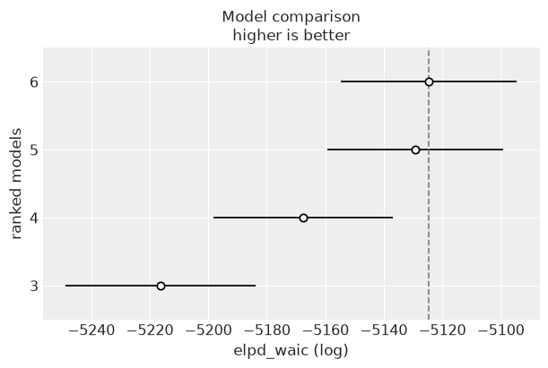
Non-finite mixture model#
def stick_breaking_truncated(α, H, K):
"""
Truncated stick-breaking process view of a DP
Parameters
----------
α : float
concentration parameter
H : `numpyro` distribution
base distribution
K : int
number of components
Returns
-------
locs : array
locations
w : array
probabilities
"""
# βs = stats.beta.rvs(1, α, size=K)
βs = dist.Beta(concentration1=1, concentration0=α).sample(random.PRNGKey(1), (K,))
w = jnp.empty(K)
w = βs * jnp.concatenate((jnp.array([1.]), jnp.cumprod(1 - βs[:-1])))
locs = H.sample(random.PRNGKey(1), (K,))
return locs, w
# Parameters DP
K = 500
H = dist.Normal()
alphas = [1, 10, 100, 1000]
# plot
_, ax = plt.subplots(2, 2, sharex=True, figsize=(10, 5))
ax = list(ax.flat)
for idx, α in enumerate(alphas):
locs, w = stick_breaking_truncated(α, H, K)
ax[idx].vlines(locs, 0, w, color='C0')
ax[idx].set_title('α = {}'.format(α))
plt.tight_layout()
UserWarning: The figure layout has changed to tight
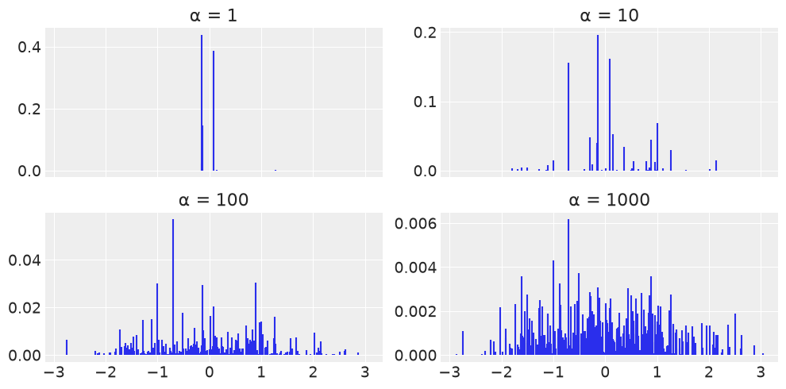
α = 10
H = dist.Normal()
K = 5
x = jnp.linspace(-4, 4, 250)
x_ = jnp.array([x] * K).T
locs, w = stick_breaking_truncated(α, H, K)
# dist = stats.laplace(locs, 0.5)
distri = dist.Laplace(loc=locs, scale=0.5)
plt.plot(x, jnp.sum(jnp.exp(distri.log_prob(x_)) * w, 1), 'C0', lw=2)
plt.plot(x, jnp.exp(distri.log_prob(x_)) * w, 'k--', alpha=0.7)
plt.yticks([])
([], [])
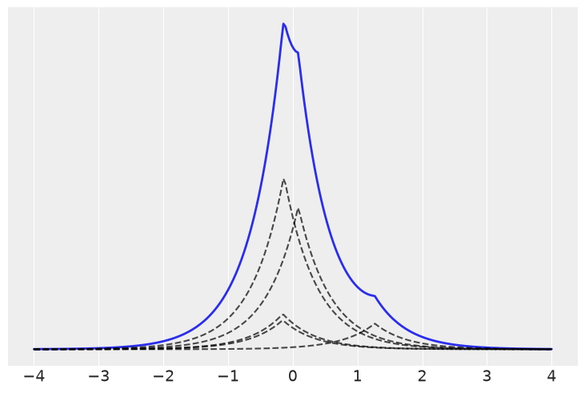
K = 20
def stick_breaking(α, K):
β = numpyro.sample('β', dist.Beta(concentration1=1., concentration0=α), sample_shape=(K,))
w = β * jnp.concatenate([jnp.array([1.]), jnp.cumprod(1. - β)[:-1]])
# β = pm.Beta('β', 1., α, shape=K)
# w = β * pm.math.concatenate([[1.], tt.extra_ops.cumprod(1. - β)[:-1]])
return w
def model(obs=None):
α = numpyro.sample('α', dist.Gamma(concentration=1, rate=1.))
w = numpyro.deterministic('w', stick_breaking(α, K))
# p = numpyro.sample("p", dist.Dirichlet(concentration=jnp.ones(clusters)))
c = dist.Categorical(probs=w.squeeze())
mu = jnp.linspace(cs_exp.min(), cs_exp.max(), K)
means = numpyro.sample('means', dist.Normal(loc=mu, scale=10), sample_shape=(K,))
sd = numpyro.sample('sd', dist.HalfNormal(scale=10))
component_dist = dist.Normal(loc=means, scale=sd)
obss = numpyro.sample('obss', dist.MixtureSameFamily(mixing_distribution=c, component_distribution=component_dist), obs=obs)
kernel = NUTS(model, target_accept_prob=0.85)
mcmc3 = MCMC(kernel, num_warmup=50, num_samples=50, num_chains=2, chain_method='sequential')
mcmc3.run(random.PRNGKey(seed), obs=jnp.expand_dims(jnp.asarray(cs_exp.values), axis=1))
# with pm.Model() as model:
# α = pm.Gamma('α', 1, 1.)
# w = pm.Deterministic('w', stick_breaking(α, K))
# means = pm.Normal('means',
# mu=np.linspace(cs_exp.min(), cs_exp.max(), K),
# sd=10, shape=K)
# sd = pm.HalfNormal('sd', sd=10, shape=K)
# obs = pm.NormalMixture('obs', w, means, sd=sd, observed=cs_exp.values)
# trace = pm.sample(1000, tune=2000, nuts_kwargs={'target_accept':0.85})
az.plot_trace(mcmc3, var_names=['α'], divergences=False, compact=False);
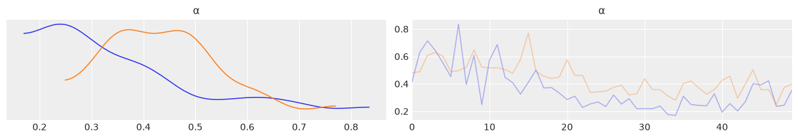
az.plot_trace(mcmc3, var_names=['α'], divergences=False);
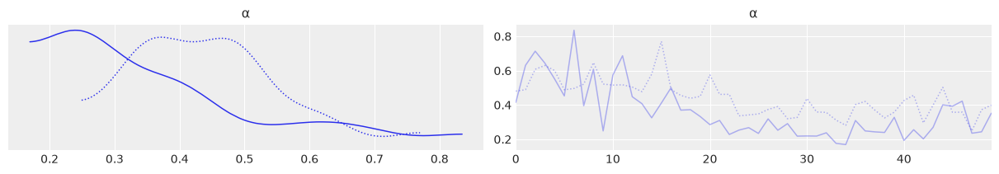
plt.figure(figsize=(8, 6))
plot_w = jnp.arange(K)
plt.plot(plot_w, mcmc3.get_samples()['w'].mean(0), 'o-')
plt.xticks(plot_w, plot_w+1)
plt.xlabel('Component')
plt.ylabel('Average weight')
Text(0, 0.5, 'Average weight')
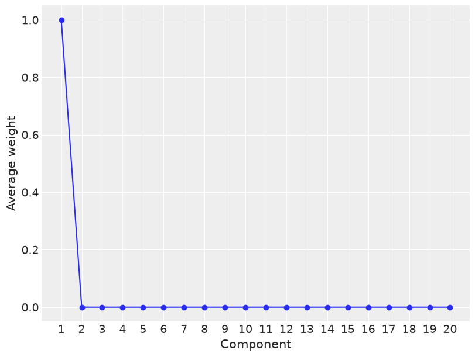
traces[0].get_samples()['means']
Array([[46.596302, 46.63517 , 57.324295],
[46.769577, 46.839527, 57.46855 ],
[47.04169 , 47.06808 , 57.510597],
...,
[45.399944, 46.58596 , 57.389954],
[45.428696, 46.587704, 57.294716],
[45.466618, 46.66854 , 57.405167]], dtype=float32)
mcmc3.get_samples()['means'].shape
(100, 20, 20)
jnp.expand_dims(mcmc3.get_samples()['means'], axis=0).shape
(1, 100, 20, 20)
mcmc3.get_samples()['means'][:, jnp.newaxis, :].shape
(100, 1, 20, 20)
mcmc3.get_samples()['sd'].shape, jnp.expand_dims(mcmc3.get_samples()['sd'], axis=1).shape
((100,), (100, 1))
mcmc3.get_samples()['w'][:, jnp.newaxis, :].shape, jnp.expand_dims(mcmc3.get_samples()['w'], axis=2).shape
((100, 1, 20), (100, 20, 1))
post = mcmc3.get_samples()
w = post['w'] # (S, K)
_means_raw = post['means'] # (S, K, K) due to sample_shape=(K,)
means = _means_raw[:, 0, :] # (S, K) - first draw per posterior sample
sd = post['sd'][:, None] # (S, 1) -> broadcasts to (S, K)
x_plot = jnp.linspace(cs_exp.min(), cs_exp.max(), 200) # (G,)
comp_dens = jnp.exp(
dist.Normal(means[..., None], sd[..., None]).log_prob(x_plot)
) # (S, K, G)
post_pdfs = jnp.sum(w[..., None] * comp_dens, axis=1) # (S, G)
plt.figure(figsize=(8, 6))
plt.hist(cs_exp.values, bins=25, density=True, alpha=0.5)
plt.plot(x_plot, post_pdfs[::100].T, c='0.5')
plt.plot(x_plot, post_pdfs.mean(axis=0), c='k')
plt.xlabel('x')
plt.yticks([])
([], [])
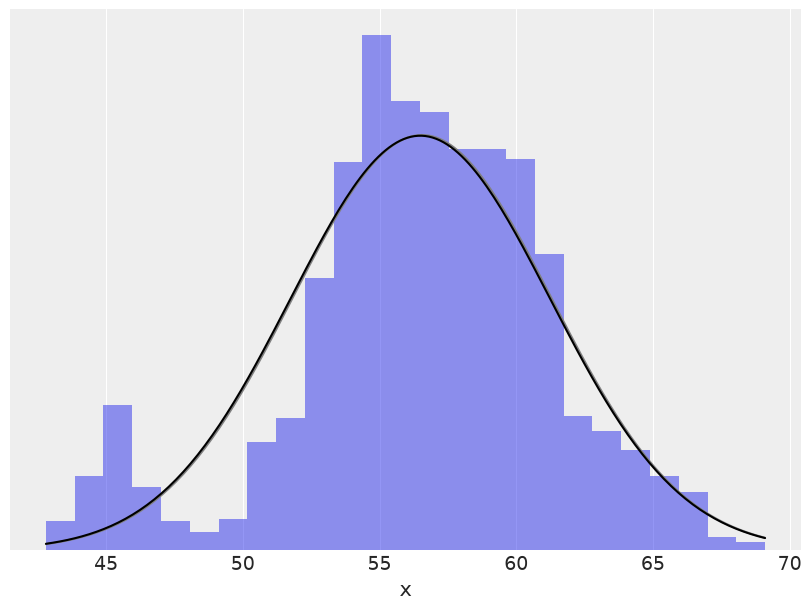
## Exercises
# clusters = 3
# n_cluster = [200, 150, 170]
# n_total = sum(n_cluster)
# means = [5, 0, -3]
# std_devs = [2, 2, 2]
# mix = np.random.normal(jnp.repeat(means, n_cluster),
# np.repeat(std_devs, n_cluster))
# az.plot_kde(np.array(mix));